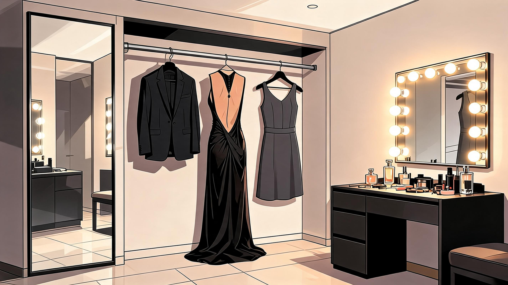
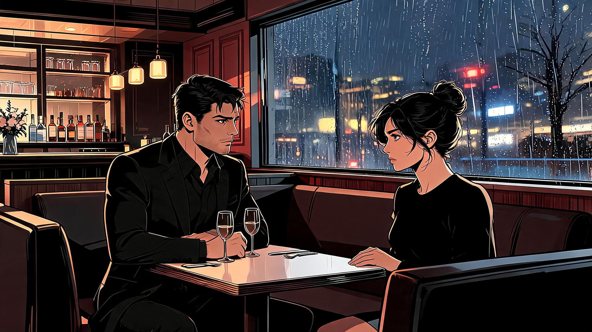
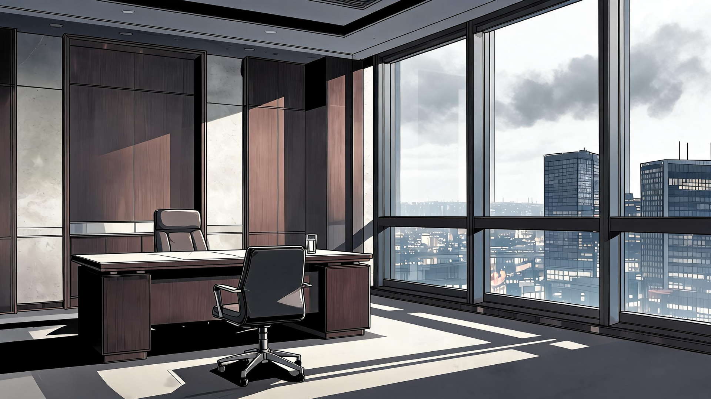
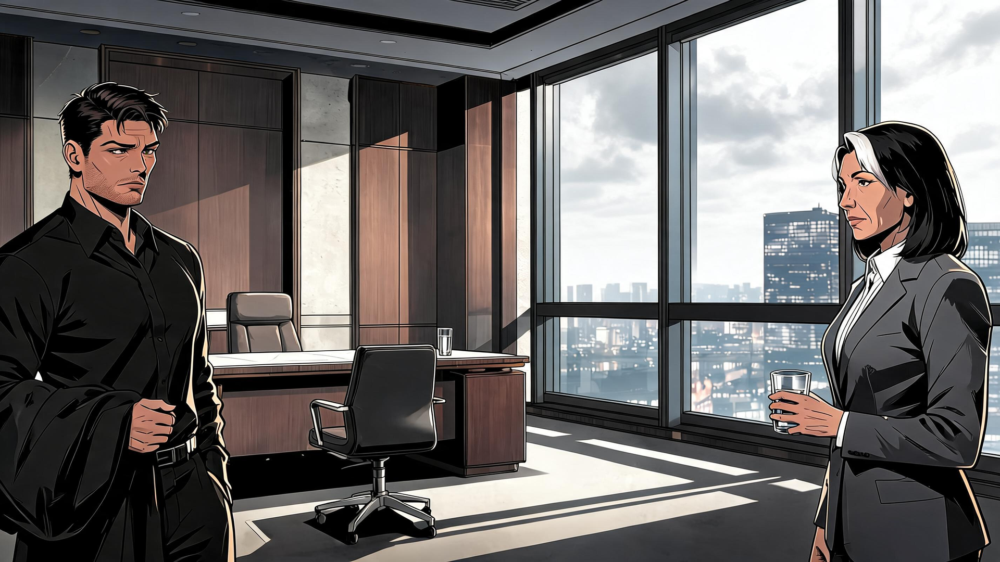

Continuity correction review
Approved batch: four PNGs, four quoted credits. Three passed and promoted for production. Sloane scene remains staging. No canonical-reference promotion or runtime binding.
PASS — eve-bg-wardrobe-continuity-v2

Three distinct garment options: one suit, one long gown and one plain charcoal cocktail dress; tactical harness removed. Room remains empty; mirror, vanity, tiles and warm semi-cel illustration preserve the original visual language.
PASS — eve-scene-maya-evening-continuity-v2

Maya wears the required plain black sweater; face, hair, seated pose and Adrian dark shirt remain consistent. Rainy Lantern booth, restrained amber palette and adult graphic-novel rendering preserved.
PASS — eve-bg-sloane-office-continuity-v2

Daytime cloudy skyline resolves the midday mismatch. Desk, chairs, window divisions, pale stone and dark wood retained; graphic directional shadows are permitted by Art Bible lighting guidance.
REVISE — eve-scene-sloane-continuity-v2

Daylight is corrected, but silver streak remains on the visible anatomical left side of Sloane’s head. Right-temple criterion fails. Do not promote, mirror the entire scene, or silently retry.